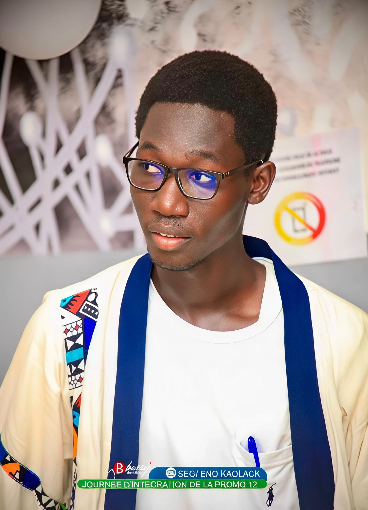
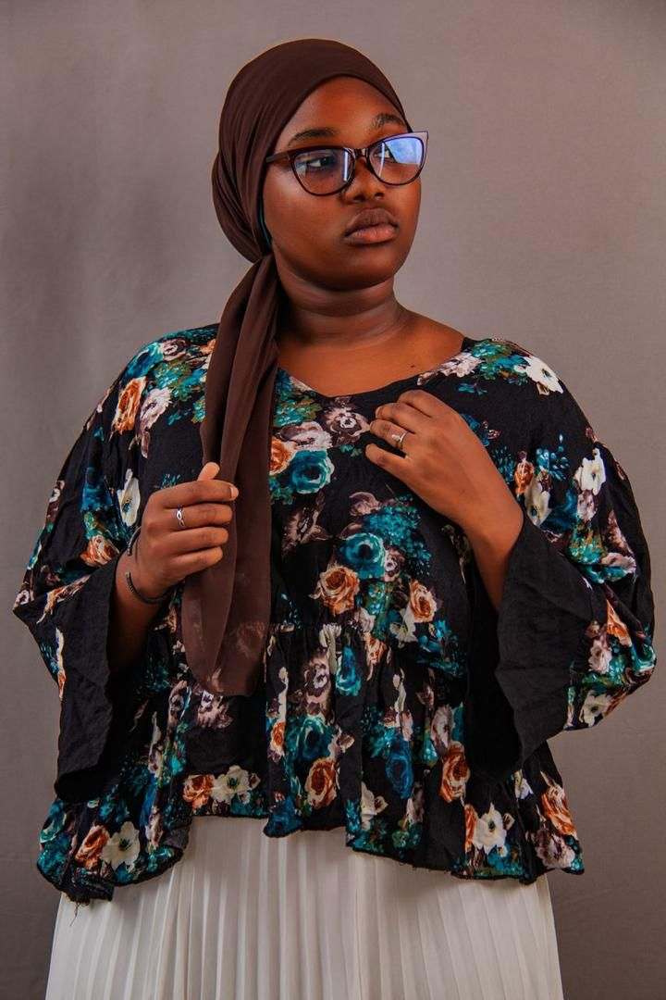
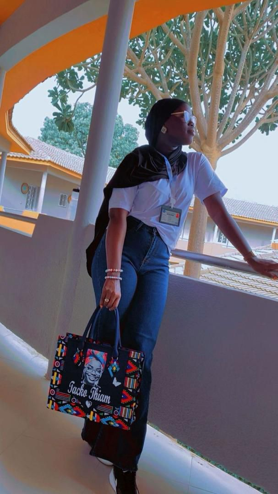
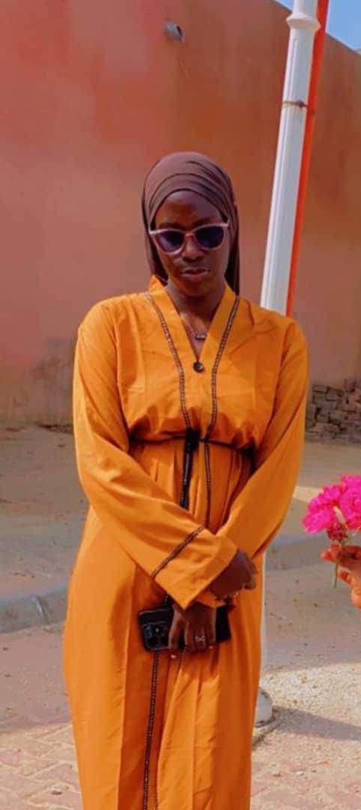
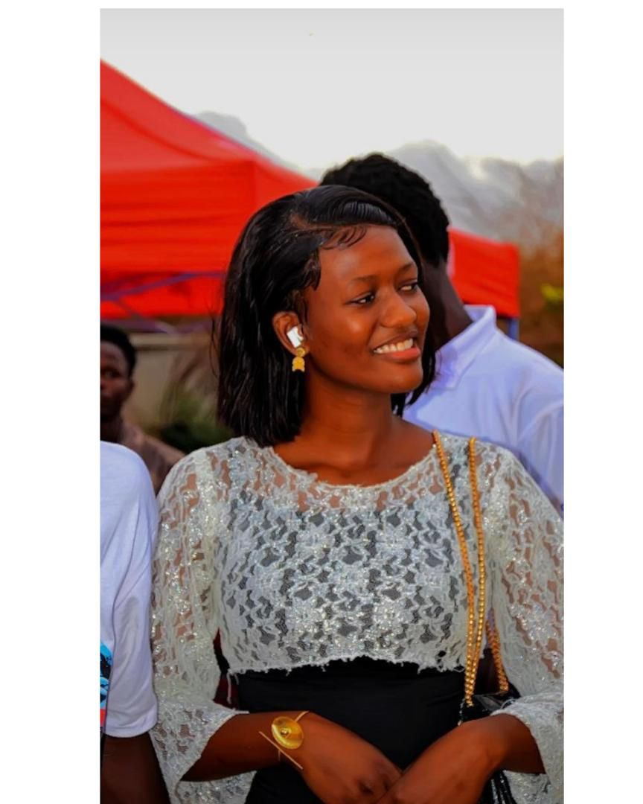
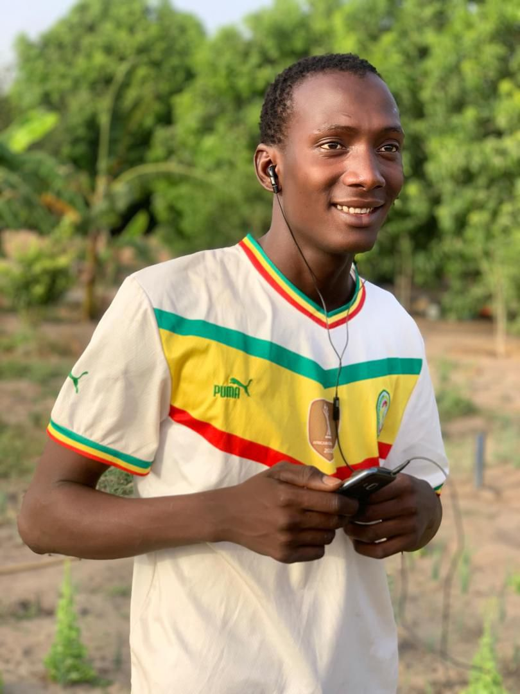
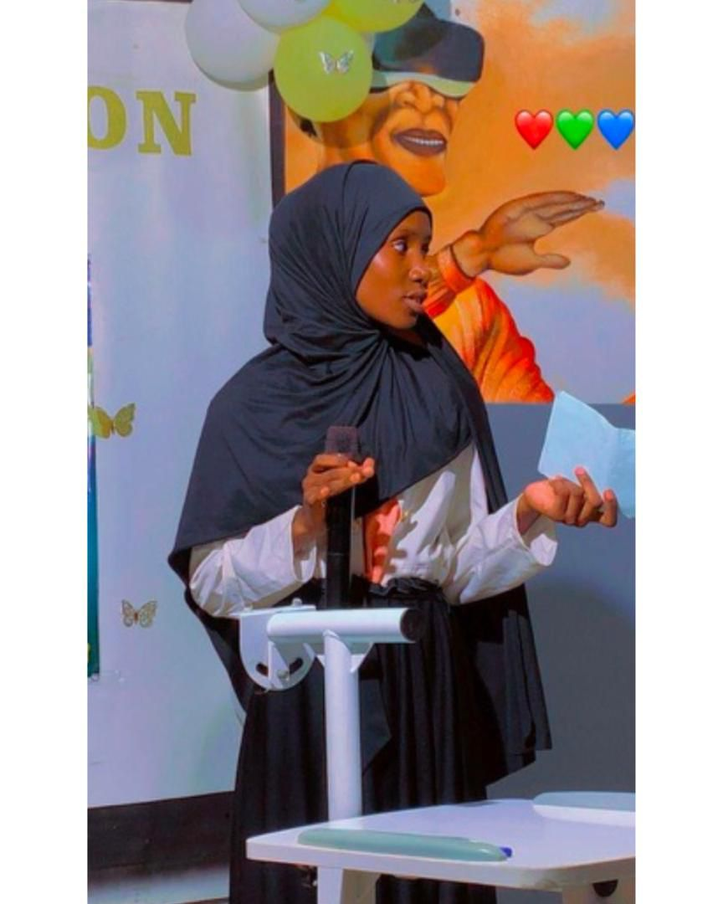
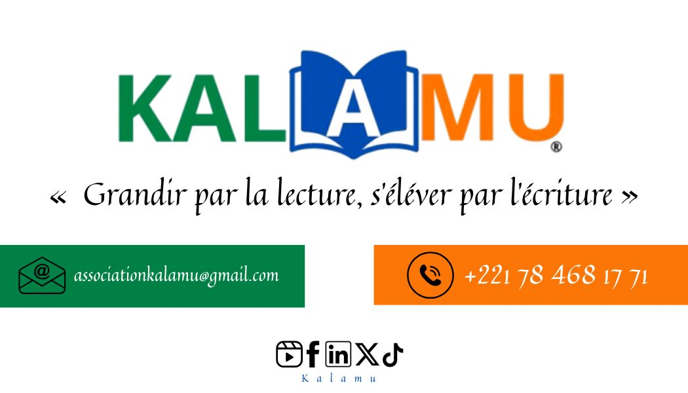

Samba Cor FAYE
Président
Président de l'association, pilier de l'organisation et leader visionnaire. Responsable de la direction générale et de la représentation.
Association Culturelle
« Grandir par la lecture , s'élever par l' écriture »
Kalamu est une association culturelle à but non lucratif, engagée dans la promotion de la lecture, de l'écriture et de la transmission culturelle en Afrique.
Découvrez l'histoire et la mission de notre association culturelle dédiée à la promotion de la lecture et de l'écriture en Afrique.
Kalamu signifie plume en swahili et en arabe. Elle symbolise le savoir, la mémoire et la transmission spirituelle.
Comme une plume qui s'élève dans le vent, nos actions portent les voix et les histoires de l'Afrique vers de nouveaux horizons, créant des ponts entre les générations et les cultures.
Une société où chaque enfant et adulte a accès au livre et où l'écrit perpétue les trésors de l'oralité africaine.
« Chaque page lue est une porte ouverte vers la liberté ; chaque mot écrit est un acte d'espérance. »— Association Kalamu
Des ambitions concrètes pour transformer l'accès à la lecture et à l'écriture en Afrique.
Créer des clubs de lecture dans écoles, lycées et universités pour encourager la passion de la lecture chez les jeunes.
Organiser le Festival Kalamu annuel du livre et de la lecture, un événement majeur de la culture littéraire africaine.
Déployer une bibliothèque mobile « Kalamu Mobile » pour apporter les livres dans les zones les plus reculées.
Lancer une collection de contes africains écrits par des enfants et jeunes, valorisant leur créativité.
Former des ambassadeurs de la lecture qui porteront notre mission dans tout le Sénégal.
Ensemble, nous pouvons créer une Afrique où chaque enfant a accès aux merveilles de la lecture et où chaque voix trouve sa plume pour s'exprimer.
Un éventail d'activités culturelles et éducatives pour tous les âges et tous les niveaux.
Débats, partages de livres et discussions littéraires dans un cadre convivial et enrichissant.
Prise de parole, développement personnel et coaching pour développer vos compétences.
Contes, poésie, récits de vie pour libérer votre créativité et votre imagination.
Masterclass et conférences avec des auteurs africains reconnus et émergents.
« Raconte ton histoire en 1000 mots » - Un concours d'écriture pour révéler les talents.
Projet de dons de livres pour démocratiser l'accès à la lecture pour tous.
Découvrez nos prochains événements et rejoignez-nous pour des moments culturels enrichissants.
Découvrez les personnes qui portent la vision et les actions de Kalamu.

Président
Président de l'association, pilier de l'organisation et leader visionnaire. Responsable de la direction générale et de la représentation.

Secrétaire générale
Gère l'administration et la coordination. Assure le bon fonctionnement interne et la communication avec les membres.

1ère Responsable partenariats
Établit et renforce les collaborations avec d'autres entités. Rôle clé pour le développement des projets.

2ème Responsable partenariats
Travaille aux côtés de Tacko THIAM pour développer le réseau et identifier de nouvelles opportunités.

Relations membres & adhésions
Contact privilégié des adhérents. Veille à leur engagement et à leur intégration au sein de l'association.

Responsable financière
Gère les finances, la trésorerie et le budget. Garantit la bonne santé économique de l'organisation.

Responsable logistique
Organise la logistique des événements et projets. Assure la fluidité des opérations sur le terrain.
Responsable pédagogique
Conçoit et suit les programmes d'éducation. Veille à la qualité du contenu et à l'impact des initiatives.

Responsable communication
Gère l'image et la visibilité de l'association. Diffuse l'information et promeut les activités.

Responsable artistique
Supervise la dimension créative des projets, la conception visuelle et les expressions artistiques.

Documentation & bibliothèque
Gère la bibliothèque et l'archivage. Assure l'organisation et l'accessibilité des ressources écrites.
Des collaborations essentielles pour notre mission
Écoles, lycées, universités
Maisons d'édition et bibliothèques
ONG éducatives
Institutions culturelles
Médias locaux
dès 6 ans
collégiens, lycéens, étudiants
& éducateurs
de lecture et d'écriture

Étudiant titulaire d'une licence en droit privé à l'Université Numérique Cheikh Hamidou Kane (UNCHK), passionné de littérature et de transmission culturelle.
« Chaque page lue est une porte ouverte vers la liberté ; chaque mot écrit est un acte d'espérance. »Rejoindre Kalamu
Rejoignez notre communauté et participez à la promotion de la culture littéraire africaine.